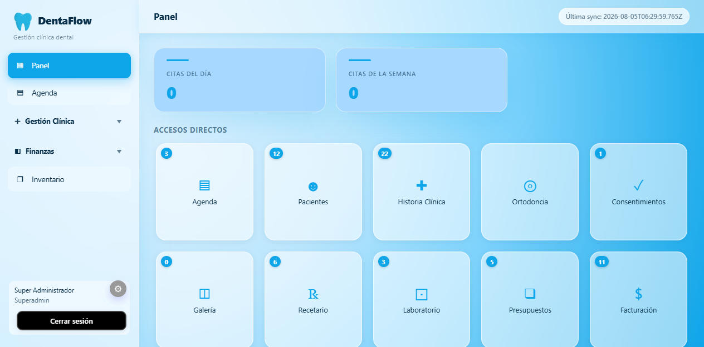

DentaFlow reúne pacientes, agenda, historia clínica, odontograma y facturación en una app de escritorio rápida y segura para Windows, Linux y macOS. Tus datos en tu equipo, sincronizados con el Servidor Central. Menos papeleo, más sonrisas.

Diseñado para dentistas: rápido, visual y pensado para ahorrarte horas cada semana.
Interfaz de un solo clic, sin recargas. Toda la info al instante, incluso con muchos pacientes.
Datos cifrados, copias de seguridad automáticas y control de acceso por rol en tu equipo.
Interfaz clara, animaciones suaves y experiencia sin fricción en cada pantalla.
Odontograma, gráficos de salud y panel claro. Entiendes tu clínica de un vistazo.
Instalas DentaFlow en tu equipo (Windows, Linux o macOS). Tus datos quedan en tu equipo y se sincronizan con el Servidor Central en la nube.
Equipo humano que te ayuda a migrar tus datos y a sacar el máximo partido desde el día 1.
Cada módulo comparte la misma base de pacientes. Sin duplicar, sin perder información.
Ficha completa, historial, contacto y autocompletado inteligente.
Citas, recordatorios y vista diaria/semanal con próxima cita en vivo.
Registro de tratamientos, evolución y documentos por paciente.
Mapa dental interactivo de la boca del paciente, claro y visual.
Sondeo periodontal visual con métricas de salud de encías.
Cotizaciones claras, aprobación del paciente y seguimiento.
Comprobantes, pagos e informes financieros automáticos.
Antes/después y fotos clínicas organizadas por paciente.
Recetas reutilizables y control de medicación.
Catálogos, listas de precios y comisiones del equipo.
Control de stock, insumos y alertas de reposición.
Pedidos de prótesis y seguimiento de trabajos externos.
Arqueo de caja, movimientos y conciliación diaria.
Campañas, recordatorios y captación de nuevos pacientes.
Recordatorios y comunicación con pacientes por WhatsApp/email.
Firmas y consentimientos informados por tratamiento.
Satisfacción y seguimiento de experiencia del paciente.
Catálogo de medicamentos y referencia terapéutica.
Cobros online con enlaces de pago para los pacientes.
Ofrece más servicios sin sumar sistemas. Cada especialidad se apoya en los módulos que ya usás todos los días.
Historia clínica, odontograma, presupuestos, laboratorio, agenda e inventario: todo conectado en una sola app.
Descarga el instalador para tu sistema (Windows, Linux o macOS) y ábrelo. Listo en minutos.
Ingresa tu clave de activación. Conéctate al Servidor Central para sincronizar tu clínica.
Agenda citas, registra tratamientos y factura sin esfuerzo. Todo en tu equipo, sincronizado a la nube.
Sin letras pequeñas. Cancela cuando quieras.
"Pasamos de una hoja de Excel a tener toda la clínica en pantalla. Las citas ya no se solapan y la facturación es automática."
"El odontograma le encanta a mis pacientes: ven y entienden el tratamiento al instante. Cerramos más presupuestos."
"Migramos 1.200 pacientes en un día con su ayuda. Cero dolores de cabeza. El soporte responde en minutos."
Déjanos tus datos y un especialista te contacta para una reunión personalizada. Sin spam, prometido.
Te responderemos en menos de 24 h.
Suscríbete y te enviamos novedades y guías de gestión dental. Una vez al mes, nada de spam.
Descarga la app de escritorio para Windows y lleva tu clínica al siguiente nivel. Instalación en minutos.